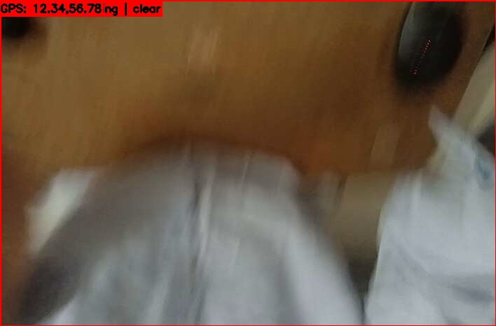
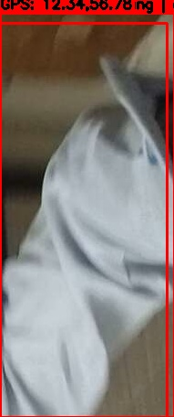
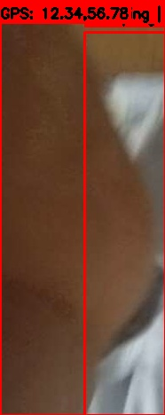

| ID | Captured Survivor | QML Priority | GPS | Map | Movement | Hazard | Frame | Captured At |
|---|---|---|---|---|---|---|---|---|
| 1 |  |
High | 12.34, 56.78 | Open map | moving | clear | 54 | 2026-06-21T21:43:09 |
| 2 |  |
High | 12.34, 56.78 | Open map | moving | clear | 56 | 2026-06-21T21:43:11 |
| 3 |  |
High | 12.34, 56.78 | Open map | moving | clear | 56 | 2026-06-21T21:43:11 |
| 4 | High | 12.34, 56.78 | Open map | moving | clear | 81 | 2026-06-21T21:43:29 |